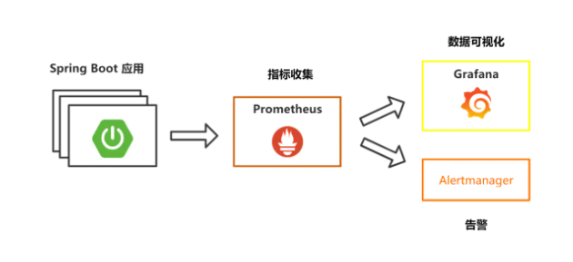
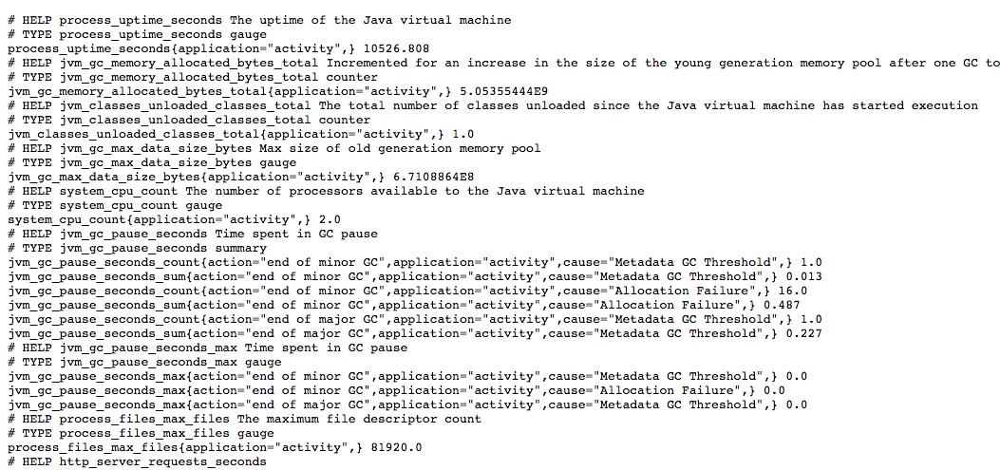
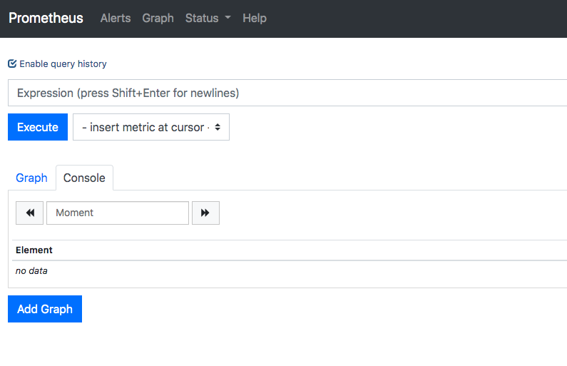
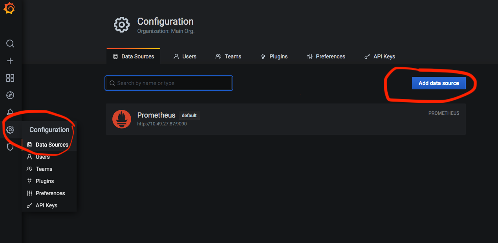
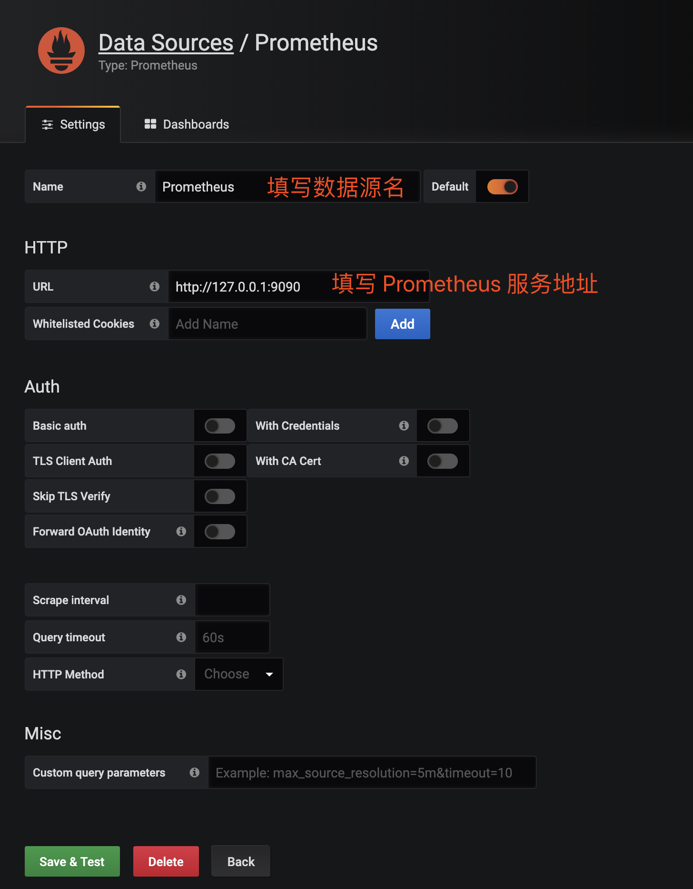
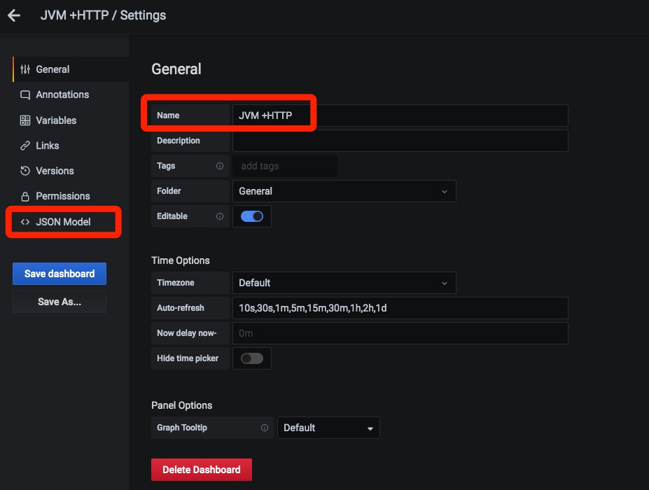
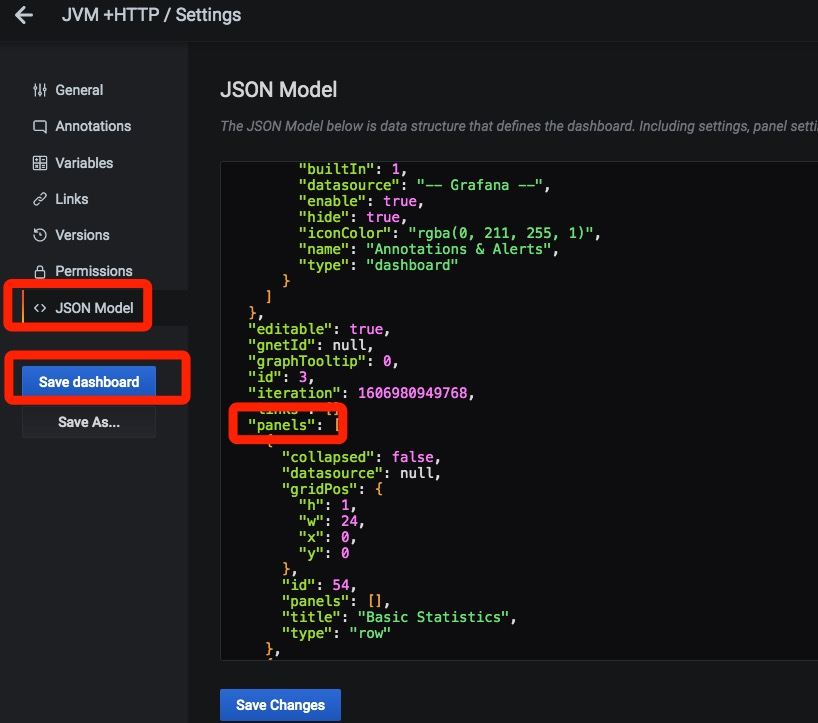
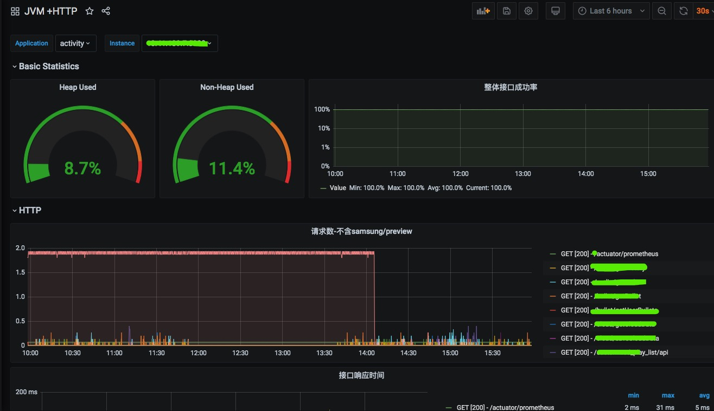

Prometheus：收集springboot和对应虚机各个维度数据
grafana：图形化界面，展示Prometheus收集到的数据
Alertmanager：报警

一、springboot配置
1、在项目pom中引入依赖
1 | <dependency> |
2、在application.properties添加配置
1 | management.endpoints.web.exposure.include=prometheus |
配置完成后重动项目，浏览器访问
http://ip:port/projectname/actuator/prometheus
出现如下数据说明成功
prometheus也会从这个接口读取数据

二、prometheus配置
1、安装
1 | # 下载 |
2、配置prometheus.yml监听目标项目
1 | # my global config |
job可以配置多个来监听多个项目的数据
alerting和rule_files是alertmanager报警关联配置
3、启动
1 | prometheus --web.enable-lifecycle --config.file=/data/prometheus/prometheus.yml > /data/prometheus/logs 2>&1 & |
prometheus 启动参数加上
–web.enable-lifecycle
这样修改完配置可以通过接口reload
IP:9090 可以查看prometheus后台（太难看所以接入Grafana图表）

三、Grafana配置
1、安装启动
1 | # 安装 brew |
默认配置下，Grafana 服务启动在 3000 端口，内置「admin/admin」账号
访问IP:3000进入后台
2、添加prometheus数据源


点击「Save & Test」绿色按钮，完成添加 Prometheus 数据源
3、制作Dashboard仪表盘
可以参照官方或者社区文档，如果配置仪表盘和布局，有一个简单的方式是直接copy json，这里给一个监控JVM和HTTP接口数据的详细json
manager界面打开新建Dashboard，修改Name，然后打开JSON Model

JSON Model中panels为仪表盘具体配置，只需要修改panels和templating等信息就可以，不能全部复制，因为gnetId等内容是唯一的

保存修改，界面如下

四、Alertmanager配置
1、下载安装
1 | # 下载 |
2、修改alertmanager.yml配置
这里可以配置webhook去调用单独的项目http接口，然后项目接口中自己选择报警方式（邮件，短信等）和内容
1 | global: |
3、配置alert-rules.yml报警规则
前面prometheus配置了alert-rules.yml文件的路径，保持一致
更多规则可以自己定义1
2
3
4
5
6
7
8
9
10
11
12
13
14
15
16
17
18
19
20
21
22
23
24
25
26
27
28
29
30
31
32
33
34
35
36
37
38
39
40
41
42
43groups:
- name: host_monitoring
rules:
- alert: 堆内存报警
expr: sum(jvm_memory_used_bytes{area="heap"})*100/sum(jvm_memory_max_bytes{area="heap"}) > 90
for: 5m
labels:
team: node
annotations:
alert_type: 堆内存报警
application: '{{$labels.application}}'
instance: '{{$labels.instance}}'
explain: "堆内存使用量超过90，目前使用量：{{ $value }}%"
- alert: 堆外内存报警
expr: sum(jvm_memory_used_bytes{area="nonheap"})*100/sum(jvm_memory_max_bytes{area="nonheap"}) > 90
for: 5m
labels:
team: node
annotations:
alert_type: 堆外内存报警
application: '{{$labels.application}}'
instance: '{{$labels.instance}}'
explain: "堆外内存使用量超过90，目前使用量：{{ $value }}%"
- alert: QPS报警
expr: sum(rate(http_server_requests_seconds_count[5m])) by (application, instance) > 1000
for: 5m
labels:
team: node
annotations:
alert_type: QPS报警
application: '{{$labels.application}}'
instance: '{{$labels.instance}}'
explain: "QPS超过1000，当前值：{{ $value }}%"
- alert: 5xx错误码报警
expr: (sum(rate(http_server_requests_seconds_count{status=~"5.."}[5m])) by (application, instance))*100/(sum(rate(http_server_requests_seconds_count[5m])) by (application, instance)) > 5
for: 5m
labels:
team: node
annotations:
alert_type: 5xx错误码报警
application: '{{$labels.application}}'
instance: '{{$labels.instance}}'
explain: "5xx错误码占比超过5%，目前值：{{ $value }}%"
4、启动alertmanager
1 | # 启动 |
启动后可以通过IP:3000访问后台
至此，整个流程搭建完成